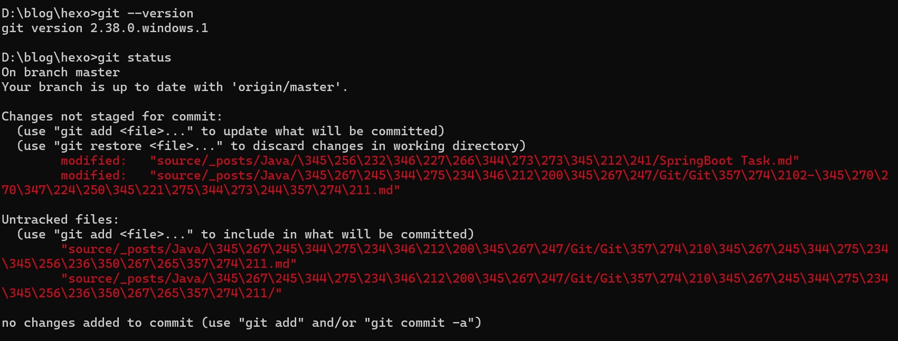
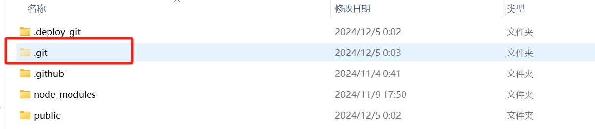
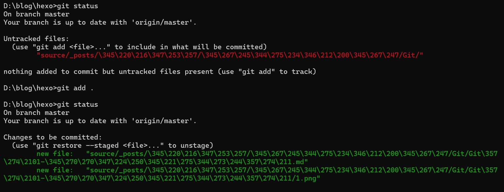
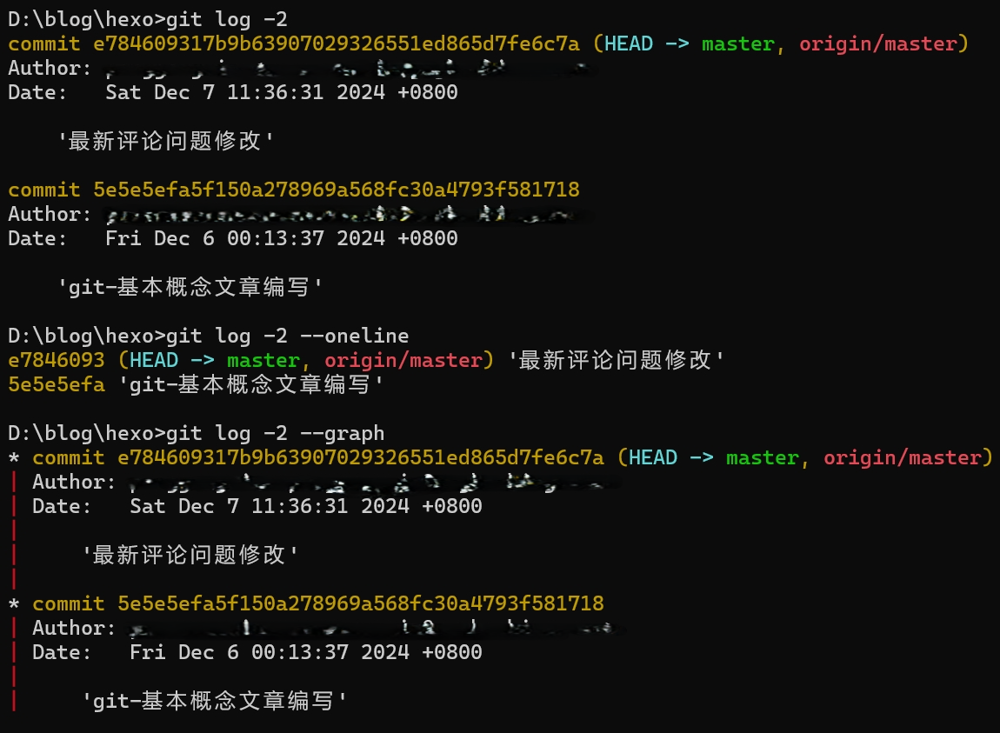
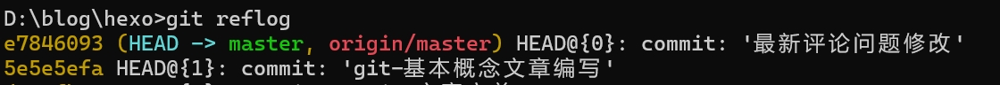
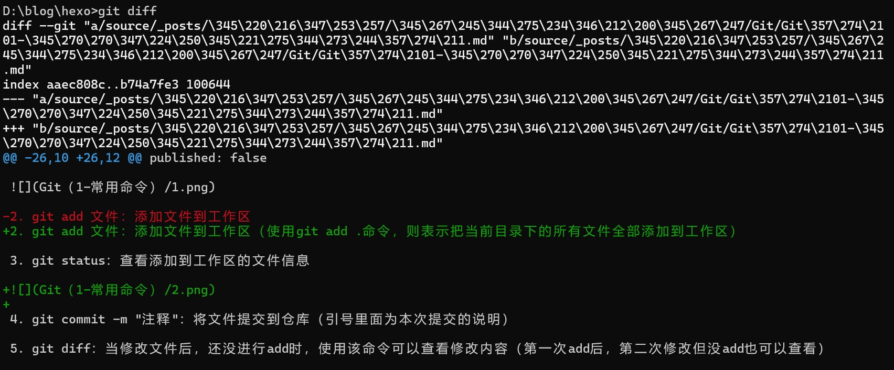

Git（2-常用命令）
配置
配置文件
Git 有三个主要的配置文件：三个配置文件的优先级是 1 < 2 < 3
- 系统全局配置（system）：包含了适用于系统所有用户和所有仓库（项目）的配置信息，存放在 Git 安装目录下：C:\Program Files\Git\etc\gitconfig。
- 用户全局配置（global）：当前系统用户的全局配置，存放用户目录：C:\Users\[系统用户名]\.gitconfig。
- 仓库/项目配置（local）：仓库（项目）的特定配置，存放在项目目录下.git/config
设置用户信息
- git config --global user.name “用户名”：设置用户名
- git config --global user.email “邮箱”：设置邮箱
- git config --list：查看 git 配置信息
- git config --list --global：查询当前用户全局配置
- git config --system --list：查看系统配置
忽略.gitignore
工作目录中的文件并不是全都需要纳入版本管理，如日志、临时文件、私有配置文件等不需要也不能纳入版本管理，那该怎么办呢？
在工作区根目录下创建.gitignore 文件，文件中配置不需要进行版本管理的文件、文件夹。.gitignore 文件本身是被纳入版本管理的，可以共享。有如下规则：
- #符号开头为注释。
- 可以使用 Linux 通配符。
- 星号（*）：代表任意多个字符，
- 问号（？）：代表一个字符，
- 方括号（[abc]）：代表可选字符范围，
- 大括号（{string1, string2,…}）：代表可选的字符串等。
- 感叹号（!）开头：表示例外规则，将不被忽略。
- 路径分隔符（/f）开头：，表示要忽略根目录下的文件 f。
- 路径分隔符（f/）结尾：，表示要忽略文件夹 f 下面的所有文件。
1 | #为注释 |
查看状态信息
| 指令 | 描述 |
|---|---|
| git --version | 查看 git 版本 |
| git status | 查看本地仓库状态，比较常用的指令，加参数 -s 简洁模式 |
| git [指令] -h | 查看指令帮助信息 |
| git [指令] --help | 打开指令详细帮助页面 |

代码/仓库管理
| 指令 | 描述 |
|---|---|
| git init [文件目录] | 初始化创建 Git 仓库，如果不指定 [文件目录]，则在当前目录创建。 |
| git add [file1] [file2] | 添加文件到暂存区，包括修改的文件、新增的文件 |
| git add [dir] | 同上，添加目录到暂存区，包括子目录 |
| git add . | 同上，添加所有修改、新增文件（未跟踪）到暂存区 |
| git rm [file] | 删除工作区文件，并且将这次删除放入暂存区 |
| git commit -m ‘说明’ | 提交变更，参数 -m 设置提交的描述信息，应该正确提交，不带该参数会进入说明编辑模式 |
| git commit -a | 参数 -a，表示直接从工作区提交到版本库，略过了 git add 步骤，不包括新增的文件 |
| git commit [file] | 提交暂存区的指定文件到仓库区 |
| git commit --amend -m | 使用一次新的 commit，替代上一次提交，会修改 commit 的 hash 值（id） |
| git cherry-pick [commit] | 拣选提交，复制一个特定的提交到当前分支，而不管这个提交在哪个分支 |
| git log -n20 | 查看日志(最近 20 条)，不带参数 -n 则显示所有日志 |
| git log -n20 --oneline | 参数“--oneline”可以让日志输出更简洁（一行） |
| git log -n20 --graph | 参数“--graph”可视化显示分支关系 |
| git log --follow [file] | 显示某个文件的版本历史 |
| git blame [file] | 以列表形式显示指定文件的修改记录 |
| git reflog | 查看所有可用的历史版本记录（实际是 HEAD 变更记录），包含被回退的记录（重要） |
- git init：在当前文件下初始化仓库，之后在该目录下会出现一个.git 文件夹，这个是 Git 来跟踪管理版本库的

- git add 文件：添加文件到工作区（使用 git add .命令，则表示把当前目录下的所有文件全部添加到工作区）

- git log：查看历史记录（显示你所提交的日志）

- git reflog：查看历史记录（只显示版本号和提交信息）

查看修改信息
| 指令 | 描述 |
|---|---|
| git diff | 查看暂存区和工作区的差异 |
| git diff [file] | 同上，指定文件 |
| git diff --cached | 查看已暂存的改动，就是暂存区与新版本 HEAD 进行比较 |
| git diff --staged | 同上 |
| git diff --cached [file] | 同上，指定文件 |
| git diff HEAD | 查看已暂存的+未暂存的所有改动，就是与最新版本 HEAD 进行比较 |
| git diff HEAD~ | 同上，与上一个版本比较。HEAD~ 表示上一个版本，HEAD~10 为最近第 10 个版本 |
| git diff [id] [id] | 查看两次提交之间的差异 |
| git diff [branch] | 查看工作区和分支直接的差异 |

暂存区管理
| 指令 | 描述 |
|---|---|
| git stash | 把未提交内容隐藏起来，包括未暂存、已暂存。 等以后恢复现场后继续工作 |
| git stash list | 查看所有被隐藏的内容列表 |
| git stash pop | 恢复被隐藏的内容，同时删除隐藏记录 |
| git stash save “message” | 同 git stash，可以备注说明 message |
| git stash apply | 恢复被隐藏的文件，但是隐藏记录不删除 |
| git stash drop | 删除隐藏记录 |
远程仓库管理
| 指令 | 描述 |
|---|---|
| git clone [git 地址] | 从远程仓库克隆到本地（当前目录） |
| git remote -v | 查看所有远程仓库，不带参数 -v 只显示名称 |
| git remote show [remote] | 显示某个远程仓库的信息 |
| git remote add [name] [url] | 增加一个新的远程仓库，并命名 |
| git remote rename [old] [new] | 修改远程仓库名称 |
| git remote rm [remote-name] | 删除远程仓库 |
| git pull [remote] [branch] | 取回远程仓库的变化，并与本地版本合并 |
| git pull | 同上，针对当前分支 |
| git pull --rebase | 使用 rebase 的模式进行合并 |
| git fetch [remote] | 获取远程仓库的所有变动到本地仓库，不会自动合并！需要手动合并 |
| git push | 推送当前分支到远程仓库 |
| git push [remote] [branch] | 推送本地当前分支到远程仓库的指定分支 |
| git push [remote] --force/-f | 强行推送当前分支到远程仓库，即使有冲突，⚠️ 很危险！ |
| git push [remote] --all | 推送所有分支到远程仓库 |
| git push –u | 参数 –u 表示与远程分支建立关联，第一次执行的时候用，后面就不需要了 |
| git push origin --delete [branch-name] | 删除远程分支 |
分支管理
| 指令 | 描述 |
|---|---|
| git branch | 列出所有本地分支，加参数 -v 显示详细列表，下同 |
| git branch -r | 列出所有远程分支 |
| git branch -a | 列出所有本地分支和远程分支，用不同颜色区分 |
| git branch [branch-name] | 新建一个分支，但依然停留在当前分支 |
| git branch -d dev | 删除 dev 分支，-D（大写）强制删除 |
| git branch [branch] [commit] | 新建一个分支，指向指定 commit id |
| git branch --track [branch] [remote-branch] | 新建一个分支，与指定的远程分支建立关联 |
| git branch --set-upstream [branch] [remote-branch] | 在现有分支与指定的远程分支之间建立跟踪关联： |
| git branch --set-upstream hotfix remote/hotfix | |
| git checkout -b dev | 从当前分支创建并切换到 dev 分支 |
| git checkout -b feature1 dev | 从本地 dev 分支代码创建一个 feature1 分支，并切换到新分支 |
| git checkout -b hotfix remote hotfix | 从远端 remote 的 hotfix 分支创建本地 hotfix 分支 |
| git checkout [branch-name] | 切换到指定分支，并更新工作区 |
| git checkout . | 撤销工作区的（未暂存）修改，把暂存区恢复到工作区。 |
| git checkout HEAD . | 撤销工作区、暂存区的修改，用 HEAD 指向的当前分支最新版本替换 |
| git merge [branch] | 合并指定分支到当前分支 |
| git merge --no-ff dev | 合并 dev 分支到当前分支，参数 --no-ff 禁用快速合并模式 |
| git rebase master | 将当前分支变基合并到 master 分支 |
| git switch master | 切换到已有的 master 分支 |
| git switch -c dev | 创建并切换到新的 dev 分支 |
标签管理
| 指令 | 描述 |
|---|---|
| git tag | 查看标签列表 |
| git tag -l ‘a*’ | 查看名称是“a”开头的标签列表，带查询参数 |
| git show [tagname] | 查看标签信息 |
| git tag [tagname] | 创建一个标签，默认标签是打在最新提交的 commit 上的 |
| git tag [tagname] [commit id] | 新建一个 tag 在指定 commit 上 |
| git tag -a v5.1 -m’v5.1 版本’ | 创建标签 v5.1.1039，-a 指定标签名，-m 指定说明文字 |
| git tag -d [tagname] | 删除本地标签 |
| git checkout v5.1.1039 | 切换标签，同切换分支 |
| git push [remote] v5.1 | 推送标签，标签不会默认随代码推送推送到服务端 |
| git push [remote] --tags | 提交所有 tag |
撤销变更
| 指令 | 描述 |
|---|---|
| git checkout . | 撤销工作区的（未暂存）修改，把暂存区恢复到工作区。不影响暂存区，如果没暂存，则撤销所有工作区修改 |
| git checkout [file] | 同上，file 指定文件 |
| git checkout HEAD . | 撤销工作区、暂存区的修改，用 HEAD 指向的当前分支最新版本替换工作区、暂存区 |
| git checkout HEAD [file] | 同上，file 指定文件 |
| git reset | 撤销暂存区状态，同 git reset HEAD，不影响工作区 |
| git reset HEAD [file] | 同上，指定文件 file，HEAD 可省略 |
| git reset [commit] | 回退到指定版本，清空暂存区，不影响工作区。工作区需要手动 git checkout 签出 |
| git reset --soft [commit] | 移动分支 master、HEAD 到指定的版本，不影响暂存区、工作区，需手动 git checkout 签出更新 |
| git reset --hard HEAD | 撤销工作区、暂存区的修改，用当前最新版 |
| git reset --hard HEAD~ | 回退到上一个版本，并重置工作区、暂存区内容。 |
| git reset --hard [commit] | 回退到指定版本，并重置工作区、暂存区内容。 |
| git revert [commit] | 撤销一个提交，会用一个新的提交（原提交的逆向操作）来完成撤销操作，如果已 push 则重新 push 即可 |
本博客所有文章除特别声明外，均采用 CC BY-NC-SA 4.0 许可协议。转载请注明来源 爱编程的小生！
相关推荐

2024-12-05
Git（1-基本概念）
Git是一种分布式版本控制系统，广泛用于软件开发和团队协作。它可以高效管理项目代码的版本变更，支持分支和合并操作，方便多人协作。Git具备离线操作能力，确保历史记录完整性和安全性，常与平台如GitHub搭配使用，为代码管理和协作开发提供强大支持。
2024-12-15
Git（3-IDEA使用）
在IntelliJ IDEA中使用Git，可通过内置工具完成版本控制。常用功能包括克隆仓库、提交代码、更改对比、分支管理和冲突解决。通过Version Control面板直观操作，例如提交更改、推送代码和切换分支。IDE支持图形化视图，使代码管理更加便捷高效，适合团队协作开发。
评论